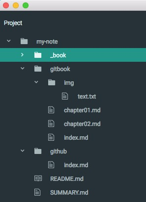

修改文档目录结构
- 在my-note文件夹中找到SUMMARY.md文件, 并用编辑器打开
根据自己文档的目录结构，按照下面的格式，编辑SUMMARY.md文件
* [GitBook使用指南](README.md) * [第一章: GitBook初始化](gitbook/index.md) - [第一节: gitbook初始化](gitbook/chapter01.md) - [第二节: 修改文档目录结构](gitbook/chapter02.md) * [第二章: 备份原始md文档到github](github/index.md)本地目录结构如下:

- 编辑并保存SUMMARY.md,打开localhost:4000便看到更新后的文档啦